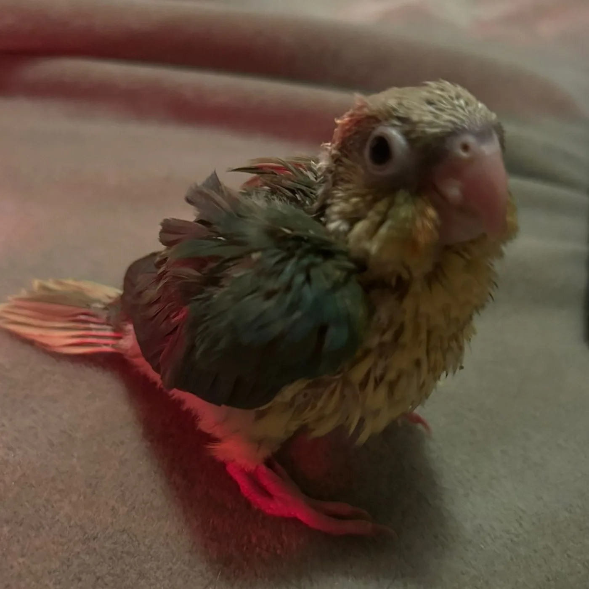
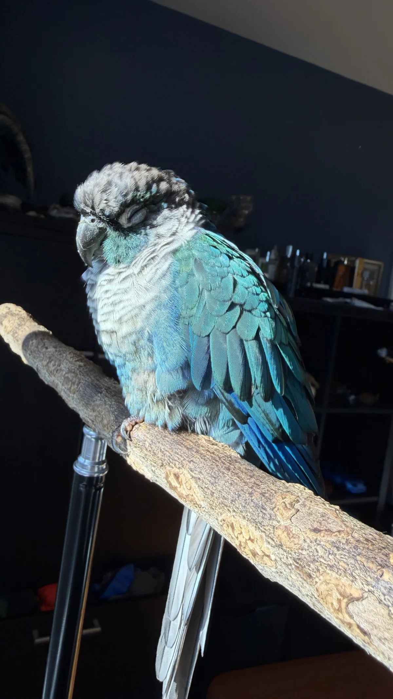

Sunny
Green wing feathers, a warm yellow chest, a pale beak, and a rosy tail fill Sunny’s close-up portrait.
Sunny ☀️ Sky🌌
Meet Sky and Sunny through the photos and moments that made their corner of TikTok unmistakably theirs.


Meet the birds
Green wing feathers, a warm yellow chest, a pale beak, and a rosy tail fill Sunny’s close-up portrait.
Turquoise and blue feathers catch the light while Sky rests with closed eyes on a natural wood perch.
Featured moments